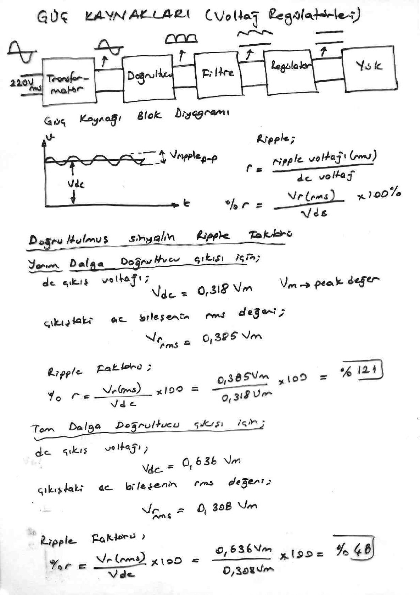
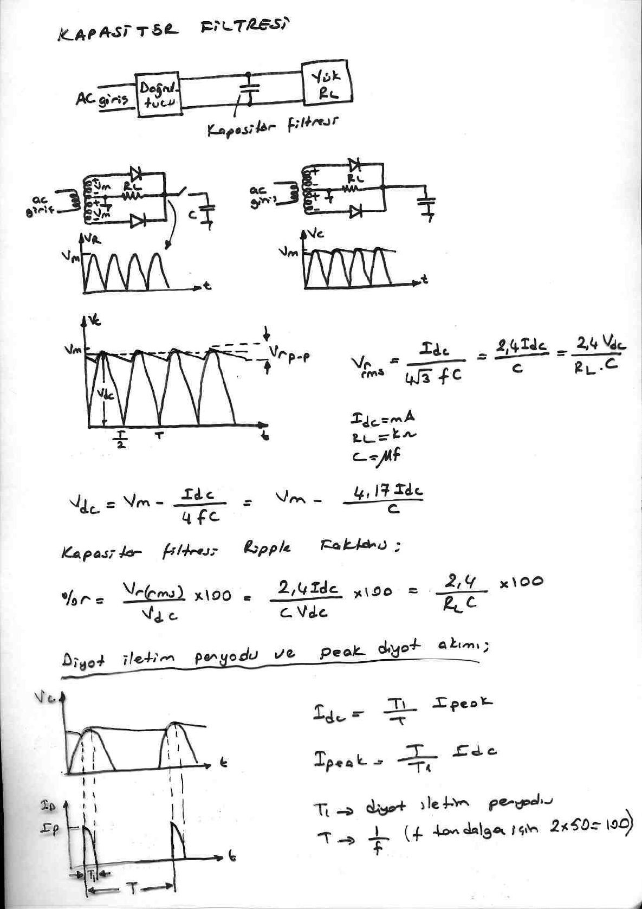
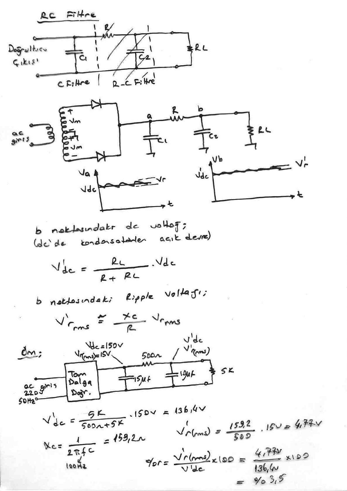
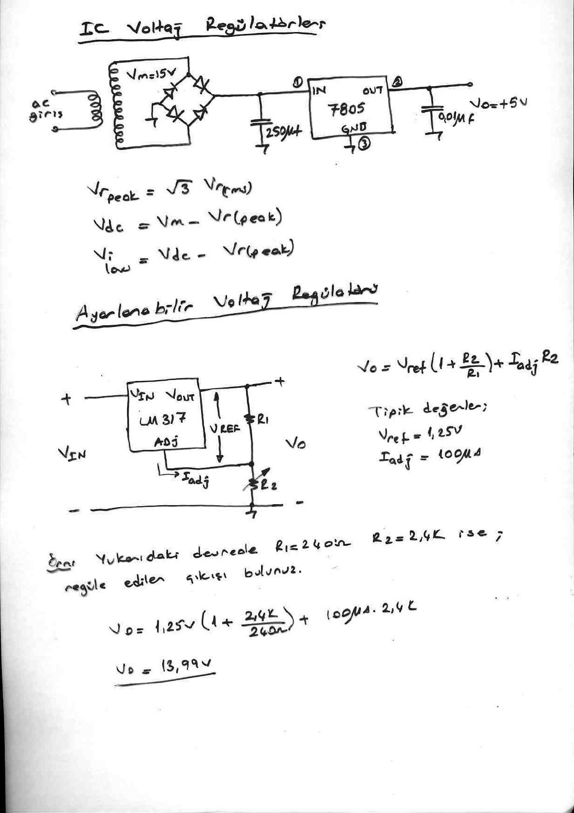

· EEM311
EEM311 Elektronik II: Güç Kaynakları, Ripple, Filtreler ve Voltaj Regülatörleri
EEM311 – Elektronik II · 01.10.2013 · 16.10.2026
Bu yazı, Başkent Üniversitesi EEM311 Elektronik II dersinin güç kaynakları (voltaj regülatörleri) konusunu anlatan dört sayfalık el yazısı ders notunun taranmış sayfalarından hazırlandı. Notlarda yazar adı ve tarih yok. Formüller ve örnekler metne aktarıldı; şemalar için sayfa görselleri eklendi. Taranmış sayfalar PDF olarak yazının sonunda indirilebilir.
Güç kaynağı blok diyagramı
220 V (rms) şebeke gerilimi sırasıyla transformatör → doğrultucu → filtre → regülatör → yük bloklarından geçer: transformatör gerilimi düşürür, doğrultucu tek yönlü (darbeli) gerilim üretir, filtre bunu dalgalı bir dc'ye çevirir, regülatör ise sabit dc çıkış verir.
Ripple (dalgalılık): Filtre çıkışındaki gerilim V_dc ortalama değeri etrafında V_r(p-p) tepeden tepeye dalgalanır.
- r = ripple voltajı (rms) / dc voltaj
- %r = (V_r(rms) / V_dc) × 100%
Doğrultulmuş sinyalin ripple faktörü
Yarım dalga doğrultucu çıkışı için (V_m: tepe değer):
- dc çıkış voltajı: V_dc = 0,318 V_m
- Çıkıştaki ac bileşenin rms değeri: V_r(rms) = 0,385 V_m
- Ripple faktörü: %r = (0,385 V_m / 0,318 V_m) × 100 = %121
Tam dalga doğrultucu çıkışı için:
- dc çıkış voltajı: V_dc = 0,636 V_m
- Çıkıştaki ac bileşenin rms değeri: V_r(rms) = 0,308 V_m
- Ripple faktörü: %r = V_r(rms)/V_dc × 100 = %48
Not: Notta tam dalga için kesir "0,636 V_m / 0,308 V_m" olarak ters yazılmış; doğrusu 0,308 V_m / 0,636 V_m ≈ 0,48'dir. Sonuç (%48) doğru.

Kapasitör filtresi
Doğrultucu çıkışı ile yük (R_L) arasına paralel bir kapasitör bağlanır. Orta uçlu transformatörlü tam dalga doğrultucuda kapasitörsüz çıkış V_m tepeli darbelerden oluşur; kapasitör takılınca çıkış V_m'ye yakın, testere dişi biçiminde dalgalanan (V_r(p-p)) bir gerilime dönüşür.
- V_r(rms) = I_dc / (4√3 f C) = 2,4 I_dc / C = 2,4 V_dc / (R_L C) (I_dc mA, R_L kΩ, C µF)
- V_dc = V_m − I_dc / (4fC) = V_m − 4,17 I_dc / C
- Kapasitör filtresi ripple faktörü: %r = V_r(rms)/V_dc × 100 = 2,4 I_dc / (C V_dc) × 100 = 2,4 / (R_L C) × 100
Not: 2,4 ve 4,17 katsayıları 60 Hz şebeke (120 Hz tam dalga ripple) için hesaplanmış ders kitabı sabitleridir. Notun sonunda belirtildiği gibi 50 Hz şebekede (100 Hz tam dalga ripple) aynı formüller V_r(rms) ≈ 1,44 I_dc / C ve V_dc ≈ V_m − 2,5 I_dc / C verir.
Diyot iletim periyodu ve tepe diyot akımı
Diyot yalnızca kapasitörün yeniden şarj olduğu kısa T₁ süresinde iletir; bu sürede yüksek bir tepe akımı (I_peak) akar.
- I_dc = (T₁/T) · I_peak → I_peak = (T/T₁) · I_dc
- T₁: diyot iletim periyodu; T = 1/f (f, tam dalga için 2 × 50 = 100 Hz)

RC filtre
C filtresinin ardına bir R–C2 bölümü eklenerek (C1 – R – C2 – R_L) ripple daha da azaltılır. a noktasında V_dc ve V_r, b noktasında V'_dc ve daha küçük V'_r bulunur.
- b noktasındaki dc voltaj (dc'de kondansatörler açık devre): V'_dc = R_L / (R + R_L) · V_dc
- b noktasındaki ripple voltajı: V'_r(rms) ≅ (X_C / R) · V_r(rms)
Örnek: 220 V, 50 Hz ac girişli tam dalga doğrultucunun çıkışında V_dc = 150 V, V_r(rms) = 15 V'tur. Ardından C1 = 15 µF, R = 500 Ω, C2 = 10 µF ve R_L = 5 kΩ'luk RC filtre vardır.
- V'_dc = 5k / (500 Ω + 5k) · 150 V = 136,4 V
- X_C = 1/(2πfC) = 159,2 Ω (f = 100 Hz, C = 10 µF)
- V'_r(rms) = (159,2 / 500) · 15 V = 4,77 V
- %r = V'_r(rms) / V'_dc × 100 = 4,77 V / 136,4 V × 100 = %3,5

IC voltaj regülatörleri
Örnek devrede V_m = 15 V'luk transformatör sekonderi köprü doğrultucuya, ardından 250 µF filtre kapasitörüne ve 7805 sabit regülatörüne (1: IN, 2: OUT, 3: GND) bağlanır; çıkışta 0,01 µF kapasitörle V_o = +5 V elde edilir.
- V_r(peak) = √3 · V_r(rms)
- V_dc = V_m − V_r(peak)
- V_i(low) = V_dc − V_r(peak) (regülatör girişinin en düşük değeri)
Ayarlanabilir voltaj regülatörü
LM317 ayarlanabilir regülatöründe V_OUT ile ADJ ucu arasına R1, ADJ ucu ile toprak arasına ayarlı R2 bağlanır:
- V_o = V_ref (1 + R2/R1) + I_adj · R2
- Tipik değerler: V_ref = 1,25 V, I_adj = 100 µA
Örnek: Yukarıdaki devrede R1 = 240 Ω, R2 = 2,4 kΩ ise regüle edilen çıkışı bulunuz.
- V_o = 1,25 V (1 + 2,4k/240 Ω) + 100 µA · 2,4k = 13,75 V + 0,24 V = 13,99 V
